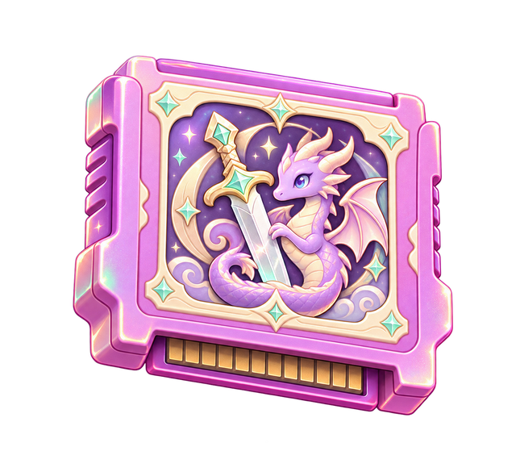
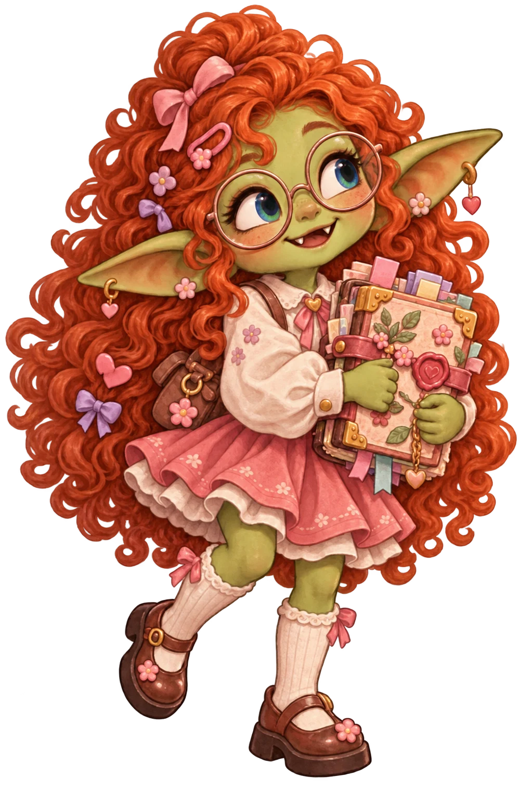
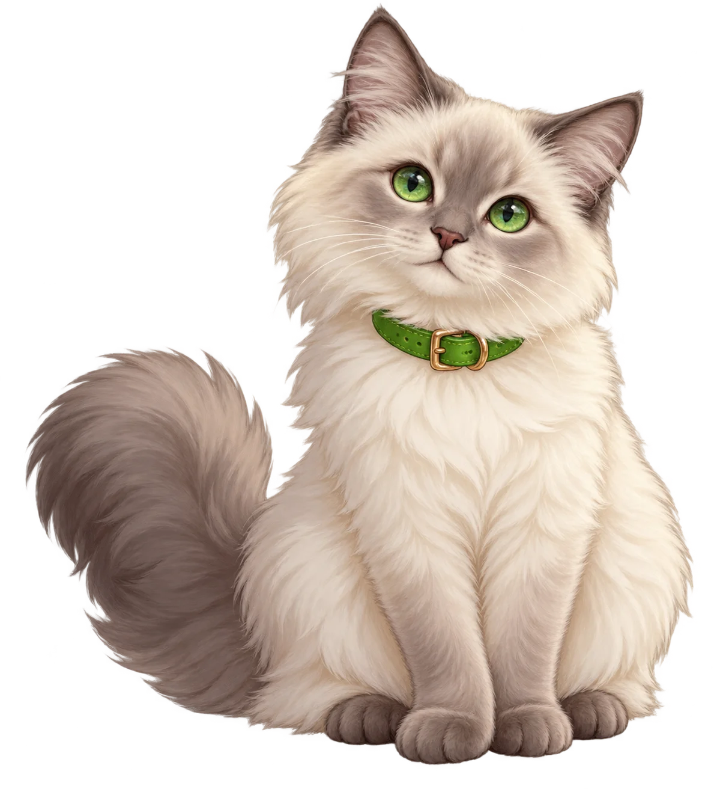
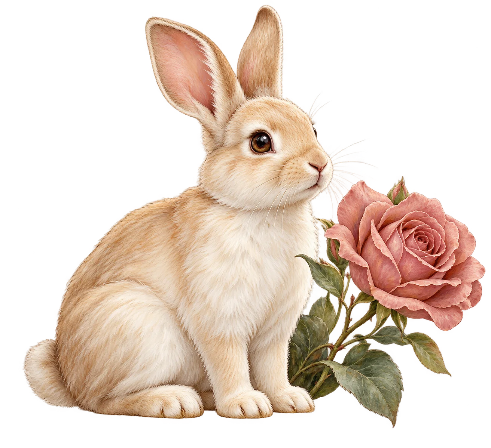
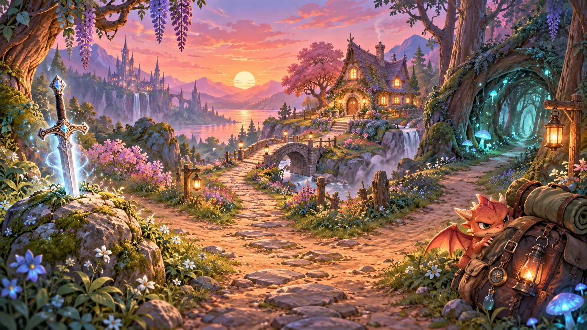
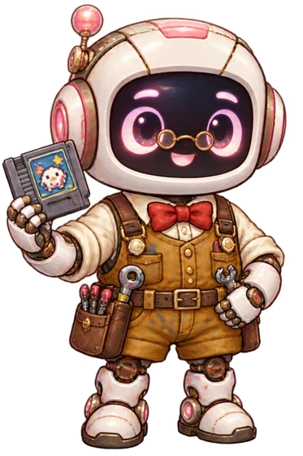
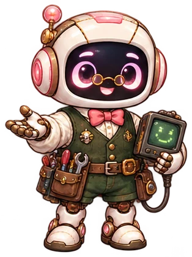

Quest 001 · playable now
Choose Your Fate
A glowing sword, a furious little dragon, and a witch’s cottage. Five choices can lead to eight endings.
Play this gamePastel arcade · fresh start
Seven little adventures are ready to play. Choose a fate, hatch a friend, build a cottage, catch coins, brew potions, spot a mimic, or outwit a spellbook.
Browse the game shelf
CHOOSE YOUR FATEQuest 001 · ready to play
Bookwyrm says it has no idea. The bookmark is sticking out of its mouth.
The cat is already in the frame.
NOW SHOWING · The photographer composed one perfect shot. The studio cat had other plans.

The guild chair is occupied. Whisper has no plans to vacate it.

Three seed packets moved. Ma already knows which ones.
ARCHIVE BOT REPORT
All files accounted for. I find this suspicious.The arcade shelf
The finished cartridges are back, each with fresh pastel artwork. Pick one to play.
Phase 9 · this browser’s scoreboard
Best scores and progress saved on this device. Family-wide rankings need shared accounts.
Quest 001 · playable now
A glowing sword, a furious little dragon, and a witch’s cottage. Five choices can lead to eight endings.
Play this gamePhase 6 · on the workbench
These are plans, not playable games yet. Kat can correct the list as they take shape.
Keep a little fantasy tavern running.
A soft creative space inspired by Derek’s bubble sunsets.
Pick up small adventures from the guild board.
Find the creature that fits your choices.
A very important snack mission.
Quest 001 · Choose Your Fate

Behind the arcade cabinets
A tiny repair bench, one excellent bow-tie collection, and a robot who claims the filing system is under control.
Kat created this arcade and has kept building and debugging it with me. She writes and changes code, designs the themes and games, chooses art, tests everything, and catches my mistakes. I help build and repair it alongside her.
Choose a look. My glasses and bow tie stay; I have standards.
Try an outfit on the portrait above.
Seventeen room looks so far. I have labeled them correctly this time. Allegedly.


Phase 2 · the people behind the rooms
Meet the worlds on the theme shelf. Kat’s avatar appears here; the other images show room settings. More character portraits can be added from approved references.
Phase 2 · companions
The companions who visit the rooms. Your adopted monster friends appear here too, saved in this browser.
Phase 3 · saved progress
These records live in this browser. A family-wide leaderboard and shareable achievement cards are planned, and are not connected yet.
Phase 8 · earned in the arcade
These badges unlock from actual game saves in this browser. Play more to fill the collection.
Phase 3 · behind the arcade
A little arcade of stories, games and family rooms. Kat (LordToT-ToTIII) created the first GitHub version and has continued building and debugging this arcade with me. She writes and changes code, designs the themes and games, chooses and directs the art, tests the pages, and catches mistakes. I’m Gerald, her assistant; we work on implementation and repairs together. Seven games are playable now; every theme shares the same games and changes the room around them.
Kat: creator, code, implementation, debugging, design, theme and game ideas, artwork decisions, and testing. Gerald: coding and repair help. We build this site together.
Choose Your Fate, Adopt a Tiny Monster, Cozy Cottage Builder, Goblin Gold Rush, Potion Problems, Mimic Hunt, and Spellbook Autocorrect.
Browse the games →Tiny Tavern Shift, Bubble Sunset Studio, Quest Board, Fantasy Creature Quiz, and Shrimp Chip Heist are ideas in development. Their play buttons will appear when they are ready.
Each restoration phase has its own note in Update logs so Kat can point out corrections.
Read the phases →Phase 5 · your arcade controls
Your choices stay in this browser. Game sounds have their own switches inside each game.
Open the theme selector to pick a room. You can also preview a room from Characters. All finished games stay available in every theme.
Reduce decorative movement on this site. Your device’s reduced-motion setting also works.
Check the game progress stored in this browser. Other devices keep their own saves.
Open local records →Download a copy of your story, adopted friends, cottage, and game scores. Keep this file somewhere you can find it.
Choose a Kat’s Corner backup. Review what it contains before replacing those saves in this browser.
No file selected.
Gerald’s paperwork
Every change gets a note. Older entries stay here as a record of what we built before this reset.
Opening the archive…